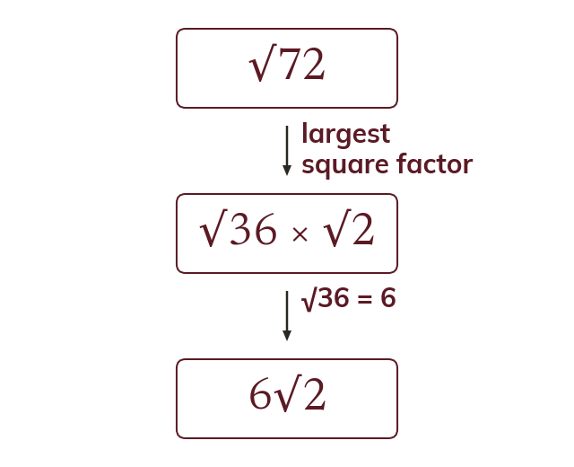
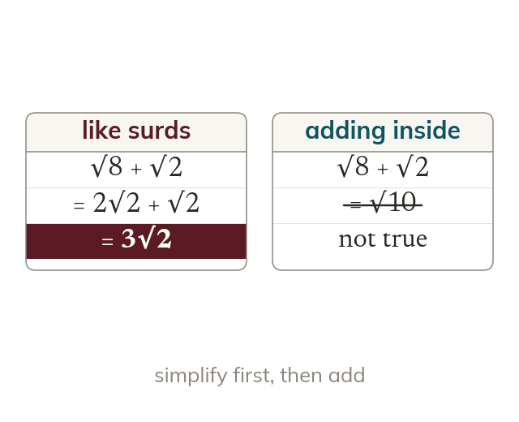
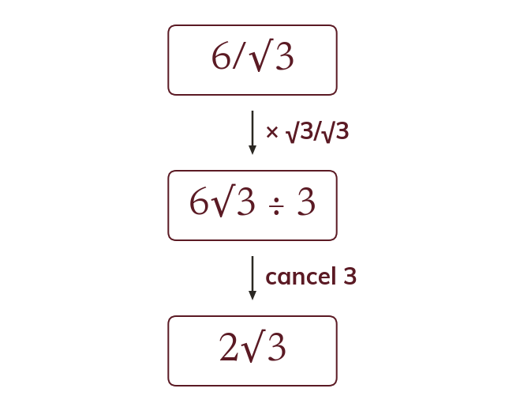
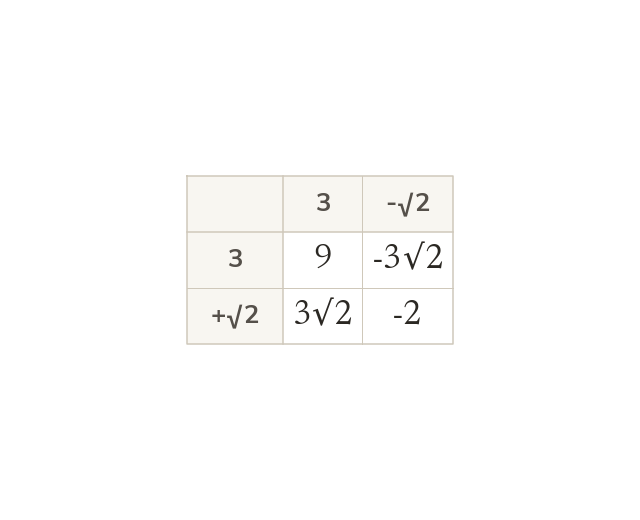

The largest square factor
A surd simplifies by taking out its largest square factor. So
A surd is only awkward while it sits in the denominator, and multiplying by the conjugate is what makes it vanish - that one trick is the whole reason rationalising works, and it is what lets you leave an exact answer rather than a rounded one.
Work down the page at your own pace. Write every answer in your book first, then click to check it.
Read each card, then follow the worked examples one step at a time.

A surd simplifies by taking out its largest square factor. So

Only like surds can be added. So becomes
Pick an answer. If it's wrong, the feedback tells you which mistake it was.
Section Manipulating surds : simplifying surds, and expanding brackets that contain surds.
Read each card, then follow the worked examples one step at a time.

Multiplying top and bottom by the surd clears it from the denominator. So

The conjugate of is
Their product, has no surd.
Pick an answer. If it's wrong, the feedback tells you which mistake it was.
Section Manipulating surds : rationalising one-term and two-term denominators.
Finished? Next lesson: 1.8 The Product Rule for Counting.
Log in, then search for a code to practise that skill.